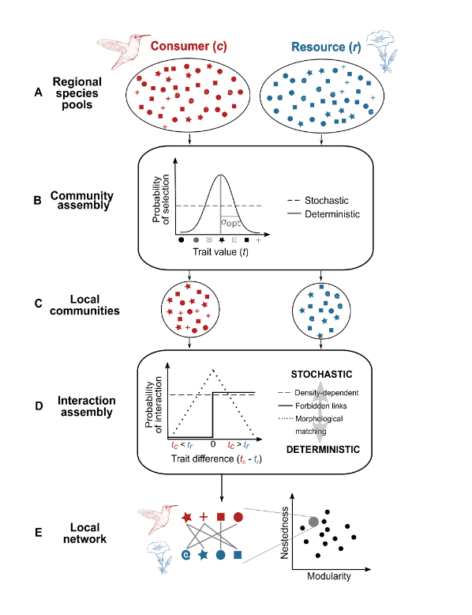
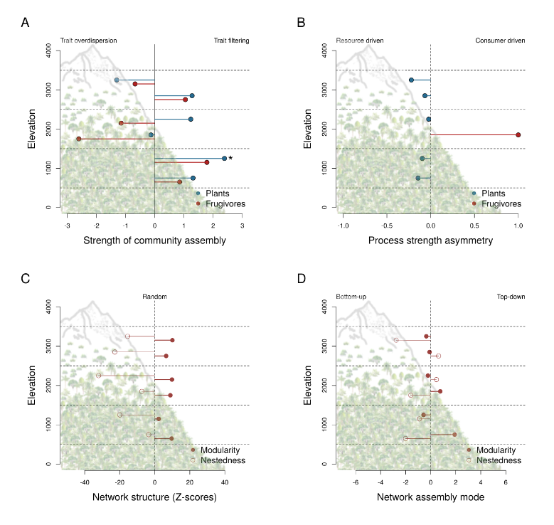

1 Trait-based inference of ecological network assembly: A conceptual framework and a methodological toolbox
The study of ecological networks has progressively evolved from a mostly descriptive science to one that attempts to elucidate the processes governing the emerging structure of multitrophic communities. To move forward, we propose a conceptual framework using trait-based inference of ecological processes to improve our understanding of network assembly and our ability to predict network reassembly amid global change. The framework formalizes the view that network assembly is governed by processes shaping the composition of resource and consumer communities within trophic levels and those dictating species’ interactions between trophic levels. To illustrate the framework and show its applicability, we (1) use simulations to explore network structures emerging from the interactions of these assembly processes, (2) develop a null model approach to infer the processes underlying network assembly from observational data, and (3) use the null model approach to quantify the relative influence of bottom-up (resource-driven) and top-down (consumer-driven) assembly modes on plant-frugivore networks along an elevational gradient. Simulations suggest that assembly processes governing the formation of pairwise interactions have a greater influence on network structure than those governing the composition of communities within trophic levels. Our case study further shows that the mode of network assembly along the gradient is mainly bottom-up controlled, suggesting that the filtering of plant traits has a larger effect on network structure relative to the filtering of frugivore traits. Combined with increasingly available trait and interaction data, the framework provides a timely toolbox to infer assembly processes operating within and between trophic levels and to test competing hypotheses about the assembly mode of resource-consumer networks along environmental gradients and among biogeographic regions. It is a step toward amore process-based network ecology and complete integration of multitrophic interactions in the prediction of future biodiversity
Introduction
The current focus of community ecology on describing variation in the structure of ecological networks comes at the expense of understanding the processes that underlie such patterns. However, discerning these underlying “rules” is essential for a deeper understanding of biodiversity maintenance in multitrophic communities and for the ability to predict how multitrophic communities might respond to ongoing global change (Ruiter and Moore 2005). While current frameworks rely on functional traits to predict the responses of species to global change and the outcome of pairwise interactions within single trophic levels (Beaudrot and Ahumada 2019), trait-mediated assembly of multitrophic communities remains poorly explored (Seibold et al. 2018). An integrative framework using trait-based inference of assembly processes could further both our fundamental understanding of multitrophic community assembly and our ability to predict community reassembly amid global change.
Ecologists use trait-based approaches to infer assembly processes that influence the composition of ecological communities (Ackerly and Cornwell 2007; Kraft and Ackerly 2010; Chase and Myers 2011; Cadotte and Tucker 2017). Trait-based inference of assembly processes is possible because species’ traits and niches are two sides of the same coin (Diamond 1975; MacArthur and Levins 1967). On the one hand, trait-based approaches are commonly used to infer assembly processes within trophic levels (Chase and Myers 2011; Chagnon and Klironomos 2015). On the other hand, trait-based approaches are used to define linkage rules that govern the occurrence of pairwise interactions between species at different trophic levels (e.g., Vázquez et al. 2007; Chagnon et al. 2015; Morales-Castilla et al. 2015; Bartomeus et al. 2016; Chacoff et al. 2018; Sonne et al. 2020). Ponisio et al. (2019) laid down the first building blocks for a trait-based framework of network assembly but did not explicitly consider the role of processes influencing the formation of pairwise interactions between trophic levels. A major shortcoming of trait-based community ecology is the lack of integration of within- and between-trophic level inference of assembly processes (Seibold et al. 2018, Ponisio et al. 2019).
Despite the similar processes governing the assembly of species within and of interactions between trophic levels, the synergistic influence of such processes on multitrophic communities and their network structure remains largely unexplored. Previous work has shown the existence of links between assembly of communities and network structure (Maynard et al. 2018, Tylianakis et al. 2018), and between assembly of pairwise interactions and network structure (Sazatornil et al. 2016, Laigle et al. 2018, Sonne et al. 2020). Thus, the ecological processes operating within and between trophic levels are rather well studied. However, their relative influence and interplay are not well understood. As a step towards the integration of assembly processes operating within and between trophic levels, earlier studies have shown that trophic interactions can affect community composition and vice versa (Gravel et al. 2011), and that the interaction of evolutionary and ecological assembly processes, rather than stability-based selection, determine network structure (Maynard et al. 2018, Medeiros et al. 2018, Valverde et al. 2018). Moreover, recent studies have achieved linking central theories in metacommunity ecology and island biogeography to interaction networks, but those studies have not yet fully integrated processes operating synergistically within and between trophic levels in their models of community assembly (Gravel et al. 2011, Pillai et al. 2011, Thompson and Gonzalez 2017, Guzman et al. 2019, Ponisio et al. 2019, Li et al. 2020). Moreover, one possible shortcoming of these studies is the lack of practical tools to infer assembly processes underpinning network assembly from observational data. Such a practical toolbox would be broadly applicable across awide range of interaction types, including host-parasite, predator-prey, and mutualistic networks. Finally, although large-scale variation in patterns of network structure is increasingly well documented (Schleuning et al. 2012, Albouy et al. 2019, Baiser et al. 2019, Braga et al. 2019), the development of a comprehensive conceptual framework and methodological toolbox for network assembly will enable global comparisons and hopefully the discovery of general “rules” underpinning multitrophic community assembly.
An emerging question in community ecology is whether the assembly of lower and higher trophic levels equally influence the overall structure of interaction networks (Albrecht et al. 2018, Maynard et al. 2018, Valverde et al. 2018, Donoso et al. 2020). In the context of ecological networks, bottom-up assembly occurs when processes governing the assembly of the lower trophic level (resource community) have a predominant influence on network structure, whereas top-down assembly occurs when processes underpinning the assembly of the higher trophic level (consumer community) have a predominant influence. For example, in plantfrugivore networks, bottom-up assembly can arise from environmental filtering of plant species and the subsequent indirect influence of plants as the fruit resource on the composition of frugivore communities (Herrera 1995, Albrecht et al. 2018). There is, however, conflicting evidence on the relative occurrence of bottom-up and top-down effects (i.e., the modes of network assembly). One the one hand, some studies suggest that bottom-up effects primarily influence the structure of ecological networks (Scherber et al. 2010). On the other hand, some studies suggest that top-down effects may equal or even exceed bottom-up effects (Seibold et al. 2018). While both bottom-up and top-down assembly might simultaneously affect network structure, their relative influence could vary predictably across environmental gradients. Indeed, differences in the mode of network assembly can arise as a result of distinct environmentalfactors independently affecting the assembly of resource and consumer communities (Kissling et al. 2008, Albrecht et al. 2018). While this shows how changes in environmental conditions may reshape multitrophic communities under global change, there is currently no consensus on a standardized approach to quantify the strength of bottom-up and top-down assembly. We therefore build on previous work (Albrecht et al. 2018) to develop and formalize an approach that can be used for different interaction types and along large environmental gradients.
The objective of our work is to provide a conceptual framework and a methodological toolbox that extends trait-based inference of assembly processes to multitrophic communities. We use simulations and apply null models to observational data to disentangle the influence of community assembly processes operating within trophic levels, interaction assembly processes operating between trophic levels, and the mode of network assembly on network structure. In particular, we ask: (1) Does spatial variation in the relative strengths of community and interaction assembly processes lead to predictable variation in network structures?; and (2) How does the relative influence of bottom-up and top-down assembly modes on network structure vary along environmental gradients? We suggest that applying this framework across interaction types (e.g., mutualistic and antagonistic) and biomes will not only enable us to uncover generalities in the way that multitrophic communities assemble, but also to understand how assembly processes interact with environmental gradients, both of which will improve predictions of future biodiversity in a changing world.
1.1 A conceptual framework for network assembly
We outline a framework to disentangle the influence of the two building blocks that shape network structure: community and interaction assembly processes (Figure 1). We refer to thewithin-trophic level processes determining the identity and relative abundances of locally cooccurring species that are a subset of a larger species pool as ‘community assembly’ and the between-trophic level processes determining interaction probabilities between species pairs as ‘interaction assembly’. Multitrophic communities can be separated into bipartite (i.e., two-level) networks, in which pairwise interactions occur only between species at two different trophic levels, such as between resources and consumers. In resource-consumer networks, community assembly influences community and trait composition at the resource and consumer trophic levels (Gause 1934, MacArthur and Levins 1967, van der Valk 1981, Hubbell 2001). Interaction assembly then determines the interactions between species pairs present in the local resource and consumer communities (Vázquez et al. 2007, Morales-Castilla et al. 2015, Bartomeus et al. 2016, Valdovinos et al. 2018, Peralta et al. 2020). Although most often considered separately (e.g., Kraft et al. 2008; Morales-Castilla et al. 2015; Li et al. 2018), community and interaction assembly processes likely shape networks in synergy.
Community and interaction assembly processes can both range from stochastic to deterministic (Hubbell 2001, Fisher and Mehta 2014, Ponisio et al. 2019, Valdovinos 2019). Stochastic community assembly processes are unpredictable chance events that act independent of species’ niches (Hubbell 2001, Vázquez et al. 2012, 2015, Fort et al. 2016), so that species are ecologically equivalent and the processes that determine their local occurrence are unrelated to trait selection. Stochastic processes underlying community assembly include ecological drift and demographic and environmental stochasticity (Leibold and McPeek 2006, Vellend 2010). In these cases, the probability of a species being present is determined by stochastic extinction and immigration, which are influenced by the relative abundance of species in the regional pool and the local communities. Similarly, stochastic interaction assembly processes are independent oftrait matching, so that pairwise interactions are based on density-dependent encounter probabilities (Vázquez et al. 2007, 2012, 2015, Olito and Fox 2015, Chacoff et al. 2018). We consider stochastic community and interaction assembly processes as a null hypothesis – that is, a baseline from which to quantify the effects of deterministic trait-based processes on the assembly of network structures.
In contrast, deterministic assembly processes act upon species’ environmental and interaction niches that are reflected by functional traits (Leibold and McPeek 2006, McGill et al. 2006, Kraft et al. 2008, Vellend 2010, Maruyama et al. 2018, Spasojevic et al. 2018, Ponisio et al. 2019). Deterministic processes can affect the assembly of communities and interactions in similar ways but acting upon different traits. Under deterministic community assembly, the probability that an individual or a species is present in a community depends on fitness advantages that can be mediated by functional traits. When environmental filtering occurs, a species is excluded from the local community if its niche is not compatible with the local conditions (van der Valk 1981, Keddy 1992). When limiting similarity occurs, species are unable to coexist in a community if their niches are too similar, due to competitive exclusion (Gause 1934, MacArthur and Levins 1967). Deterministic community assembly processes act upon species’ response traits, e.g. those traits that represent species’ physiological constraints (Figure 1). For example, hummingbirds and bees are smaller at high elevations owing to their metabolic demands (Graham et al. 2012, Classen et al. 2017). One approach for estimating the degree of determinism in processes underpinning community assembly is to compare the local trait distribution to one generated by a random sampling of the regional species pool (e.g., Kraft & Ackerly 2010).
Likewise, deterministic interaction assembly processes act upon matching traits, which are those trait pairs that mediate resource-consumer interactions (Dehling et al. 2014; Schleuning et al. 2020; Figure 1). Such matching traits include for example, corolla depth and beak length in plant-hummingbird networks (Maglianesi et al. 2014, Sonne et al. 2020) or carbohydrate and nutrient supply traits in plant-mycorrhizal fungi networks (Kiers et al. 2011, Chagnon et al. 2013, 2015). When morphological matching occurs, an interaction is more likely to take place when there is a high correspondence between the trait values of interaction partners (Sazatornil et al. 2016), leading to high interaction efficiency (e.g., Maglianesi et al. 2014). Alternatively, when forbidden links occur, a species can only interact with partners that do not exceed a maximum trait value relative to its own trait value (Olesen et al. 2010, Morales-Castilla et al. 2015). For example, small-beaked birds typically cannot eat large fruits, but large-beaked birds can eat fruits of all sizes (Galetti et al. 2013). Because functional traits mediate deterministic assembly, and because deterministic processes might differ depending on whether we focus on community or interaction assembly, we refer to ‘trait-based assembly’ throughout in order to characterize the suite of deterministic processes involved in network assembly.

To test whether variation in assembly processes can indeed influence the structure of networks, we first explored whether and how variation in simulated assembly components leads to predictable variation in resource-consumer network structures (Box 1). Specifically, we examined whether variation in community or interaction assembly is more likely to influence network structure. The simulation results reveal that our framework is able to separate community and interaction assembly processes and that both trait-based community and interaction assembly processes can influence network structure.
1.2 Quantifying the imbalance of assembly processes between trophic levels
In addition to the effect of within-trophic level community assembly processes on network structure, differences in the strength of assembly processes between two trophic level can also influence network structure. These differences in the strength of processes can arise, for example, as a result of the different and independent effects of environmental gradients on the assembly of resource and consumer communities (Kissling et al. 2008, Albrecht et al. 2018). Different trophic levels may also differ in the scale of environmental factors to which they respond (Guzman et al. 2019). Therefore, we assume that the relative strength of trait-based community assembly processes between trophic levels (hereafter, process strength asymmetry, PSA) can influence the structure of bipartite networks, for example by influencing the availability of interaction partners (Albrecht et al. 2018). We expect process strength asymmetry to be a widespread phenomenon in nature that promotes the diversity of network structures within a multitrophic species pool. Thus, we propose a way to quantify process strength asymmetry and its effects on network structure. More specifically, we define PSA as the logratio of the strength of trait-based processes at the resource and consumer levels (Appendix S1: Equation S2) and we compare the structure of networks assembled under symmetric (PSA = 0) and asymmetric process strengths (PSA ≠ 0).
Given that global change influences species in particular functional groups and trophic levels more than others (e.g., Dirzo et al. 2014), we might expect imbalance to emerge in multitrophic communities worldwide. In order to predict how multitrophic communities might respond to environmental change, it is important to know whether and why resource (bottom-up assembly) or consumer (top-down assembly) communities exert a stronger influence on networkstructure (Gripenberg and Roslin 2007). For example, if the current mode of network assembly is bottom-up, then future changes in resource community composition are more likely to have a strong effect on network structure than would changes in consumer community composition. Moreover, the network assembly mode might trigger an ‘assembly cascade’ whereby assembly processes shaping the composition of one trophic level indirectly govern the assembly of another trophic level via the assembly of pairwise interactions. For example, if a hypothetical hostparasite network with specialized pairwise interactions is assembled bottom-up, the assembly processes determining the composition of the host community can be assumed to also determine the composition of the parasite community indirectly via the parasites’ dependency on their interaction partners.

In addition to environmentally-induced variation, the assembly mode may vary due to interaction type characteristics, such as the degree of reciprocal dependency. That is, networks in which trophic levels strongly and mutually depend on each other, such as mycorrhizal fungiplant networks, could be expected to vary greatly in their assembly mode. On the contrary, networks in which one trophic level disproportionately depends on the other, such as predatorprey networks, could be expected to experience predominantly bottom-up assembly mode as the predators at the higher trophic level cannot persist locally in the absence of their prey at the lower trophic level. Variation in bottom-up and top-down assembly due to interaction type characteristics has not been explored before, but our framework permits testing for such variation in natural networks. Indeed, the network assembly mode can be quantified by contrasting observed patterns of network structure to a null model (for details, see section 4 and Appendix S1: Equation S7). Generally speaking, the effects of resource and consumer communityassembly on network structure are first quantified separately and then compared to conclude which trophic level has the predominant effect on the observed network structure.

1.3 Inferring network assembly from observational data
Disentangling the relative and combined influence of community and interaction assembly on network structure in natural systems requires a new trait-based toolbox. For application to observational data, such a toolbox must 1) match with the available data , 2) be flexible to modifications in network properties, interaction types, species richness, traits, and other relevant components, and 3) provide user-friendly code and examples of questions and data. Building on our conceptual framework, we propose a null model approach that aligns with these requirements and allows inference of the effects of community and interaction assembly, as well as process strength asymmetry and network assembly mode, on ecological networks. The approach expands previous methods for analyzing single and multiple trophic levels (e.g., Kraft et al. 2008; Morales-Castilla et al. 2015) and will enable ecologists to address central questions in community ecology, biogeography, and conservation ecology (Appendix S3: Table S3). It further enables elucidating changes in the contribution of particular assembly processes to the structure of resource-consumer networks along large-scale environmental gradients (Vellend 2010, Chase and Myers 2011).
The approach quantifies the degree to which the observed network structure deviates from the expected structure of a set of null networks. The null networks are generated by null models that exclude the assembly processes of interest. Specifically, the approach consists of three steps outlined below in which we (1) quantify the type and strength of trait-based assembly processes, (2) determine their effects on network structure, and (3) jointly interpret the results of(1) and (2) to relate trait-based processes to network assembly. Here, we use stochastic processes as a baseline for quantification of trait-based processes. Although we recognize that community and interaction assembly likely act in synergy, for simplicity of applying our framework for the first time, we consider community and interaction assembly processes independent of each other. Moreover, for simplicity, we focus our discussion on binary networks whose structure disregards the variation in pairwise interaction frequencies. However, we illustrate how our approach can be used for both binary and quantitative network data.
Applying our null model approach to empirical data requires information on species’ occurrences in the local communities, relevant response and matching traits, and pairwise interactions. We note that even though functional ecology conceptually differentiates between response and matching traits (Suding et al. 2008), the function of particular traits may in fact be challenging to attribute, and the same trait can be relevant for both community and interaction assembly processes (Schleuning et al. 2015). For example, animal body size can perform both as a response and as a matching trait in mutualistic plant-frugivore networks because it relates to both thermoregulation and to the ability to use different types of fruit resources (McCain and King 2014, Lim et al. 2020). An additional challenge in trait -based inference of network assembly is that response and matching traits may be correlated at the organismal level due to developmental constraints, selection operating on multiple traits and/or non-random associations of the underlying genes (Gardner and Latta 2007, Saltz et al. 2017). So far, we know little about the extent of such trait correlations, especially across environmental gradients and for different trophic levels (Peres-Neto et al. 2012, Schleuning et al. 2020).
As response and matching traits are entwined, one could argue that all traits can perform as both response and matching traits, but to different degrees and contingent on theenvironmental context. We suggest that trait selection should be based on a thorough understanding of the natural history of the study system, and the specific environmental context (e.g., Schleuning et al. 2020). Theoretical frameworks can provide clear criteria to characterize and prioritize traits within the ecological context of interest (Kearney et al. 2021). An additional possibility is the use of synthetic traits obtained with multivariate (ordination) methods to reduce trait dimensions and account for potential correlations among traits (Albrecht et al. 2018). Moreover, multivariate methods for traits can be combined with information on pairwise interactions to aid the selection of matching traits (Thuiller et al. 2006, Dray et al. 2014, Albrecht et al. 2018). Such approaches may also be a way forward from the often arbitrary categorization of response and matching traits towards more holistic multitrophic approaches in trait-based ecology.
Step 1. The type and strength of trait-based community and interaction assembly processes
First, the trait distributions of resource and consumer species are compared to those generated from random sampling of the regional pool to detect the type and strength of trait-based community assembly processes, such as environmental filtering or limiting similarity (MacArthur and Levins 1967, Weiher and Keddy 1995, Cadotte and Tucker 2017). The strength of the trait-based community assembly process can be quantified as the standardized effect size of an appropriate metric of trait variation, such as the range or standard deviation of trait values (Kraft and Ackerly 2010, Munoz et al. 2018). Second, the trait-based interaction assembly processes can be detected by testing for the strength of associations in traits between the trophic levels, for instance by using RLQ and fourth corner analyses (e.g., Dehling et al. 2014; Dray et al. 2014; Albrecht et al. 2018). RLQ analysis is an ordination method for quantifyingassociations of two matrices via a third matrix, such as plant and animal traits via their interactions, and fourth-corner analysis uses a permutation approach to test whether these associations differ from a null expectation (Dolédec et al. 1996, Dray et al. 2014). These two analyses allow evaluation of the strength of trait-based processes relative to a stochastic interaction assembly.
Step 2. The influence of trait-based assembly processes on network structure
The influence of trait-based processes on network structure is inferred by comparing observed network metric values, such as modularity and nestedness, to those derived from four sets of null models (Vázquez & Aizen 2003; Dormann et al. 2009; Table 1A). These four process-based null models are then used as heuristic tools to investigate which combination of processes most likely influences network structure (Gotelli et al. 2010, Lessard et al. 2012). Specifically, null model algorithms are used to assemble null networks from a regional pool, such that some assembly components are identical to the observed network, while other assembly components are allowed to vary stochastically. The influence of a given assembly component on observed network structure is then estimated by calculating a standardized effect size (SESNET; as in Equation S7 in Appendix S1). The greater the SESNET, the stronger the effect of the simulated assembly component(s) on network structure. The influence of trait-based effects is then calculated in relation to each null model (Table 1A) and assembly component (Table 1B). That is, by comparing SES NET derived from different null models, we can infer the relative effects of trait based resource, consumer, and interaction assembly on network structure (Table 1B). These assembly component-specific SES NET values can also be used to quantify the network assembly mode. For this, first a standardized effect size of network structure (SESNET) is quantified for each trophic level separately (Table 1A). Then, the assembly mode of the bipartite network is quantified as the log-ratio of the effect sizes (SESNET) between resource and consumer trophic levels (Appendix S1: Equation S7). The generation of null networks as well as the quantification of assembly mode are exemplified both in the simulations (Box 1) and in the case study (the associated codes are available in a repository, DOI: 10.5281/zenodo.4604951).
Step 3. Interpretation of results
To infer the type and strength of trait-based or stochastic community and interaction processes involved in the assembly of the observed network, we interpret the combined results of Steps 1 and 2. Specifically, the assembly processes identified in Step 1 are inferred to govern the effect of a given assembly component on network structure detected in Step 2. For example, suppose we observe that environmental filtering shapes the consumer trophic level (Step 1) and traitbased consumer assembly has the strongest effect on network modularity in comparison to the other assembly components (Step 2). From this, we can infer that environmental filtering of the consumers has the strongest influence on the modularity of the network (see Table 1 for a full account of how to interpret the null model results).
1.4 Case study: Mutualistic network assembly along an elevational gradient
To illustrate the applicability of our framework, we explored the influence of community assembly processes, including process strength asymmetry, on the structure of observational plant-frugivore networks along an elevational gradient in the Andes in Ecuador (Quitián et al.2018, 2019; Figure 4). Specifically, we asked whether (1) the asymmetry of assembly process strengths (PSA) between plant and frugivore communities and (2) the influence of PSA on network structure varied along the elevational gradient. Answering these questions enables us to assess variation in the predominance of bottom-up and top-down effects on network assembly along the elevational gradient.
To explore these questions, we assumed that the same traits act as both response and matching traits for plants and frugivorous birds. Specifically, we assumed that environmental filtering and trait matching are mediated by the same traits as they are associated with both energy use and foraging (Appendix S3: Figure S 2). This assumption is justifiable at least for plant-frugivore interactions (Donoso et al. 2020, Peña et al. 2020). To determine how a given set of species’ functional traits correlates with environmental properties and interaction type characteristics (i.e., which traits are most representative response and matching traits), information on the trait-environment and trait-interaction relationships for a particular taxon must be available. If no such information is available, RLQ and fourth corner analyses can be used to explore and test trait-environment and trait-interaction relationships (Dolédec et al. 1996, Dray et al. 2014, Albrecht et al. 2018). In our case study, we used fruit length, width and mass, and plant height as response and matching traits for plants, and bill length and width, body mass, and hand-wing index as response and matching traits for birds, based on evidence from previous work (Dehling et al. 2016, Bender et al. 2018).
We used RLQ analysis to map the plant and animal species into a common multivariate functional trait space based on the selected traits and an aggregated metanetwork of pairwise interactions across the elevational gradient (Dehling et al. 2014, Dray et al. 2014, Albrecht et al. 2018). This was done via a simultaneous ordination of the three matrices that describe the plantand animal traits and the pairwise interactions. To quantify the strength of interaction assembly processes, we used the strength of the plant-frugivore trait associations obtained with the RLQ and applied a fourth corner permutation test (model 4) to test whether the trait associations are different from what would be expected if species interacted randomly (ter Braak et al. 2012).
Then, we used the species scores of plants and animals on the first RLQ axis of the multivariate trait space to test for multitrophic trait-environment relationships (Figure 4A-B). We used these synthetic trait axes because they are comparable between trophic levels and thus allow an assessment of differences in the relative magnitude of deterministic community assembly processes between plants and animals. To quantify the strength of community assembly processes at both trophic levels, we quantified the standardized effect size of trait distribution in both plant and frugivore communities. The standardized effect size was obtained by comparing the standard deviation of the synthetic trait distributions relative to those expected from a resampling of the species pool (i.e., null communities). The delineation of species pools can strongly influence the inference of community assembly processes (Lessard et al. 2012, 2016). Here, we defined site-specific regional species pools using a probabilistic process-based approach that accounts for environmental dissimilarities and geographic distances among sites (Graves and Gotelli 1983, Zobel 1997, Lessard et al. 2016) (Appendix S3: section S2). Thus, we gave equal weight to dispersal probability and establishment probability in our definition of species pools (Lessard et al. 2016). We estimated dispersal probabilities among sites by calculating least-cost path distances between sites penalized by geographic distance, topography, elevation, temperature, and precipitation (Hijmans et al. 2005, Farr et al. 2007). We estimated establishment probabilities for each site by calculating environmental similarity between the focal site and the other sites included in the species pool. We used Euclidean distances amongsites in a multivariate environmental space obtained with Principal Component Analysis (PCA) to estimate environmental similarity among sites.
We also assessed the variation in process strength asymmetry along the elevational gradient by quantifying the log-ratio of the strengths of plant and frugivore community assembly processes. Specifically, we took the natural logarithm of the ratio of frugivore and plant community assembly strengths that were quantified as standardized effect sizes in the previous step (Appendix S1: Equation S2). A positive log-ratio indicated a relatively stronger deterministic process at the frugivore level, whereas negative log-ratio indicated a relatively stronger deterministic process at the plant level. In addition, we calculated the mode of assembly for all networks along the gradient. The assembly mode is obtained with the null model approach (section 4) and it quantifies the relative effect of trait filtering on network structure between two trophic levels (section 3). The assembly mode can be bottom-up or top-down, here contingent on whether the deterministic assembly of plant or frugivore community has the larger effect on network structure.
We quantified the network-level structure of the plant-frugivore networks with metrics of modularity and nestedness (for details, see Appendix S1: section S4). Highly modular networks are characterized by cohesive sub-clusters of species interacting more with each other than with other species present in the network (Olesen et al. 2007). In perfectly nested networks, interaction partners of specialists are subsets of the interaction partners of generalists (Bascompte et al. 2003). We quantified modularity and nestedness with the Z-scores of Barber’s Q and Almeida-Neto’s NODF metrics, respectively (Barber 2007, Almeida-Neto et al. 2008). We repeated the analyses using weighted networks based on interaction frequencies and obtainedqualitatively consistent results (Appendix S3: Table S 1, Figure S 4). For more details on the case study methods, see Appendix S3.

Does process strength asymmetry vary along the elevational gradient?
Process strength asymmetry peaked at mid elevation but did not vary systematically along the elevational gradient (Figure 5A-B). Generally, plant communities tended to be under stronger filtering than frugivore communities along the elevational gradient. The largest process strength asymmetry recorded at mid-elevation was driven by a strong overdispersion in the functional diversity of frugivore communities. This peak in asymmetry at mid-elevation was likely due to the fact that variation in climate along the elevational gradient has independent and distinct effects on plant and frugivore communities (Albrecht et al. 2018).
In support of this hypothesis, the strength of community assembly processes peaked at different elevations for the different trophic levels. For plants, the strength of environmental filtering peaked at mid elevation but was also significant at low elevation. For frugivores, the strength of environmental filtering was rather weak at mid -elevation and peaked at low elevation. One possible explanation for such differences in the strength of filtering between trophic levels is that environmental conditions at mid-elevation harbor characteristics of both low and high elevation environments and therefore support species and functional traits typical of both environments. Such ‘biome mixing’ may drive trait overdispersion and a high functional diversity at mid-elevation (Swenson et al. 2012, Lamanna et al. 2014), which may then lead to process strength asymmetry.
Does the influence of process strength asymmetry on network structure vary along the elevational gradient?
The structure of plant-frugivore networks varied along the elevational gradient (Figure 5C). However, the change in network structure did not correspond with a change in process strength asymmetry (Figure 5B). All plant-frugivore networks sampled along the elevational gradient were significantly more modular and less nested than the networks generated by the null model. Although process strength asymmetry was idiosyncratic along the elevational gradient, such asymmetry was generally driven by stronger filtering of plants. Moreover, the assembly mode was generally bottom-up (Figure 5D). In this case, bottom-up assembly mode means that the filtering of plant traits had a larger effect on network structure than the filtering of frugivore traits. This result is also consistent with the filtering of plant traits and the overdispersion of frugivore traits along the elevational gradient. Such imbalance in the effects of community assembly on network structure may arise from a stronger regionalization of plant communities and better dispersal capabilities of avian frugivores along the gradient.
To further understand the factors influencing network structure along elevational gradients, a next step would be to explore the influence of ecological, evolutionary, and historical processes on network assembly mode. The influence of historical and evolutionary processes on network assembly mode could be studied using an established comparative phylogenetic framework (Lagomarsino et al. 2016) that allows linking the observed assembly mode to historical processes across biogeographical scales. For example, the observation that plant-frugivore networks were mainly assembled bottom-up across the elevational gradient could reflect the interaction of multiple processes, such as mountain uplift and historical climate change, differentially influencing ecological trait selection and/or trait diversification betweentrophic levels (Lagomarsino et al. 2016, Luzuriaga-Aveiga and Weir 2019, Valenta and Nevo 2020). Understanding the sources of variation behind process strength asymmetry and network assembly mode may reveal novel network-environment relationships and help to separate similarly structured networks by their assembly processes. Thus, quantifying trophic level imbalances in network assembly is highly relevant for predicting the future of biodiversity in the context of global change.

INSIGHTS AND FUTURE DIRECTIONS
Addressing ‘big questions’ in community ecology
With the aim of uncovering generalities of multitrophic network assembly, our framework can be applied together with trait and interaction data to answer a wide range of ‘big questions’ in community ecology (Appendix S3: Table S3). For example, how does the type and relative influence of assembly processes in multitrophic networks vary across space and time? Understanding network assembly at large spatiotemporal scales is important because global change drivers profoundly affect the composition of communities and ecological network, thereby affecting ecosystem functions and services (Tylianakis et al. 2008, Montoya and Raffaelli 2010, Tabi et al. 2020).
In nature, complex multitrophic communities involve more than two trophic levels and more than one interaction type. For instance, plant-frugivore networks are embedded within multitrophic networks that involve pollination, seed dispersal, and predation. Studying networks of different interaction types and of varying numbers of trophic levels can reveal how complex multitrophic communities are disassembled and reassembled through time in response to global change. From an applied research perspective, when estimating the impacts of global change one cosystem functioning and stability, changes in metrics of network structure, such as modularity and nestedness, are often linked to resilience (May 1972, Thébault and Fontaine 2010, Jiang et al. 2018). Identifying the assembly processes that yield more stable multitrophic networks could thus provide essential information for global change mitigation and conservation prioritization (Allesina and Tang 2012, Rohr et al. 2014, Levine et al. 2017).
Leveraging global trait and interaction data to answer ‘big questions’ in community ecology
A global deficit of data describing species’ traits and interactions (i.e., Raunkiæran and Eltonian shortfalls; Hortal et al. 2015) has hampered progress in ecology. In particular, data availability in biodiverse tropical regions is scarce compared to temperate regions (Boakes et al. 2010, Meyer et al. 2015). Recent data mobilization efforts (e.g., BioTime, Mangal; Dornelas et al. 2018, Vissault et al. 2019) have nevertheless begun to fill some of these gaps. For example, comprehensive and high-quality data of trophic interactions, functional traits, and species’ occurrences have recently become available, even in the tropics, for some well-studied taxa, such as birds (e.g., Bello et al. 2017; Hasui et al. 2018; Pigot et al. 2020). Globally, large databases of plant and animal traits have been published (e.g., Kattge et al. 2011; Wilman et al. 2014; Myhrvold et al. 2015; Faurby et al. 2018) or are being developed, and they offer unprecedented opportunities to address and reassess ‘big questions’ in community and network ecology at continental or global scales (Appendix S3: Table S3). To facilitate answering the big questions, the accumulation of high - quality trait data will also allow to improve the selection and identification of response and matching traits for different taxa and interaction types. Various ecological and evolutionary processes can generate intraspecific variation in traits (Moran et al. 2016). Such intraspecific traitvariation can mask assembly processes if the processes are inferred using only species-level trait data (Violle et al. 2012). To further advance process-based inference of assembly processes, we encourage collection of individual-level data of both response and matching traits. As a next step, individual- and population-level trait data as well as species-specific trait-environment relationships could be recorded and incorporated into our framework to detect fine-scale spatiotemporal variation in network assembly processes. With this framework, we develop the necessary concepts to take full advantage of these new data sources and narrow the gap between pattern- and process-oriented approaches in macroecology and community ecology.
Limitations and future directions
Admittedly, our framework is only a first step towards improving inference of multitrophic community assembly. Several measures can be implemented to extend our framework. Firstly, future null model approaches of network assembly could incorporate more explicit trait matching processes and the effect of varying interaction assembly (i.e., trait matching) on the composition of local communities. For this, linkage rule functions can be modelled at the site level based on traits and phylogenetic similarities (e.g. Bartomeus et al. 2016; Benadi et al. 2021). Secondly, we generally assume equal importance of assembly processes across species, even though the level of determinism of species occurrences or pairwise interactions might depend on species’ traits or environmental factors (Peralta et al. 2020, Sonne et al. 2020). However, the structure of our framework is flexible and allows future exploration of variation in species-specific responses to deterministic and stochastic assembly processes. For example, in our simulations, the probability that a species will be selected from a species pool into a local community can be species- or sites pecific. Moreover, the degree of intraspecific trait variation could be set to differ among species according to empirical evidence of phylogenetic or ecological constraints in trait plasticity. As a next step, an R package of the null model approach with possible extensions to the aforementioned components will be developed to allow easy application of the toolbox to empirical data.
To extend our framework, further work is needed to develop approaches enabling the study of quantitative networks. Here, we mainly focus on the presence-absence of pairwise interactions and ignore effects of varying interaction strength or frequency among species pairs (Vázquez et al. 2007). Our framework can accommodate quantitative interaction data that are based on species’ relative abundances or interaction frequencies, but we note that interpreting interaction frequencies as a proxy of relative abundances and using them to infer assembly processes should be done with caution, particularly when the networks are assembled under strong trait-based processes. Future research can apply our framework to quantitative data by either developing additional methods for incorporating the uncertainty that originates from using interaction frequencies or, preferably, increasing the collection of abundance data in general. To complement the use of quantitative data, species-level metrics (e.g., centrality; Martín González et al. 2010) and weighted networks can be used to quantify network structure. In that regard, our framework is already applicable to weighted networks by using weighted metrics, such as weighted modularity (Beckett 2016), weighted nestedness (Almeida-Neto and Ulrich 2011), metrics borrowed from spectral graph theory (e.g., graph energy; Chung 1996), or other widely used quantitative measures of network complexity (Bonchev and Buck 2005).
We note that there are challenges in inferring assembly processes from local trait distributions. Density-regulated, competition-driven communities may exhibit trait patterns similar to communities under environmental filtering (Chesson 2000, Mayfield and Levine2010). Therefore, it is not possible to fully separate the effects of different assembly processes using patterns of trait convergence and divergence alone (HilleRisLambers et al. 2012, Cadotte and Tucker 2017). Future work may use one of several solutions proposed by other authors to support the inference of network assembly processes, such as selecting traits that correlate with environmental conditions (e.g., Cadotte and Tucker 2017), incorporating experimental data (Kraft et al. 2015) or demographic models (HilleRisLambers et al. 2012), defining ecologicallyexplicit species pools (Lessard et al. 2012), and testing hypotheses that involve multiple dimensions of functional niche occupancy (Li et al. 2018). Similar limitations can also apply to the inference of trait-based processes in interaction networks (Dormann et al. 2017) and require additional conceptual and methodological developments.
1.5 Conclusions
The current focus of network ecology is largely on describing patterns of network structure (e.g., Fortuna et al. 2010, Schleuning et al. 2012, Trøjelsgaard and Olesen 2013) and their consequences for network dynamics and stability (Allesina and Pascual 2008, Thébault and Fontaine 2010, Allesina and Tang 2012, Grilli et al. 2016). While our knowledge of how network structure varies in space and time has greatly improved (e.g., Galiana et al. 2019, Schwarz et al. 2020), the processes involved in generating such patterns remain obscure (Maynard et al. 2018). Moving network ecology beyond a descriptive endeavor and into a hypothesis-driven science requires new ways of thinking about community and interaction assembly. Our framework shows the necessity of considering community and interaction assembly simultaneously in network ecology. Indeed, it is now possible to ask when and where, not whether, community assembly matters more than interaction assembly in determining network structure. This is a crucial step towards predicting network structure in space and time and forms an essential basis for predicting range shifts of interacting species and community assembly in a changing world (Gounand et al. 2016, Schleuning et al. 2020, Blanchet et al. 2020). As such, our framework is a powerful tool to uncover mechanisms that take place at the interface of community and interaction assembly, while improving predictions of biodiversity in space and time.